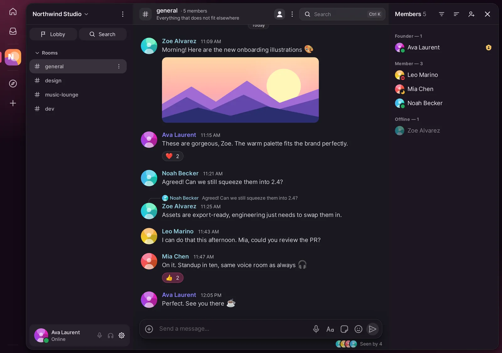
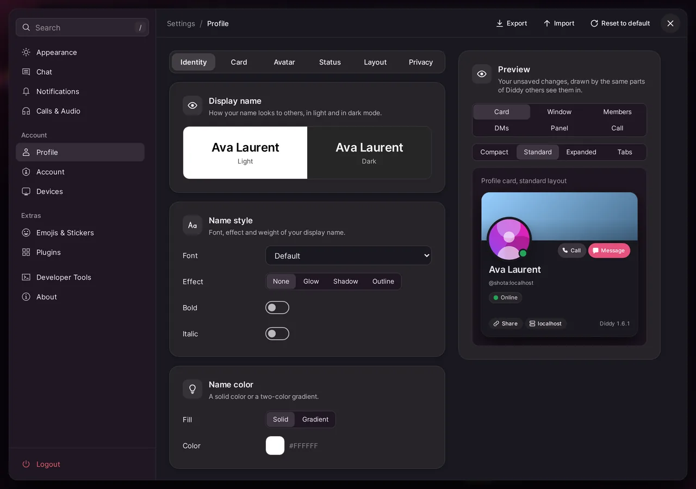
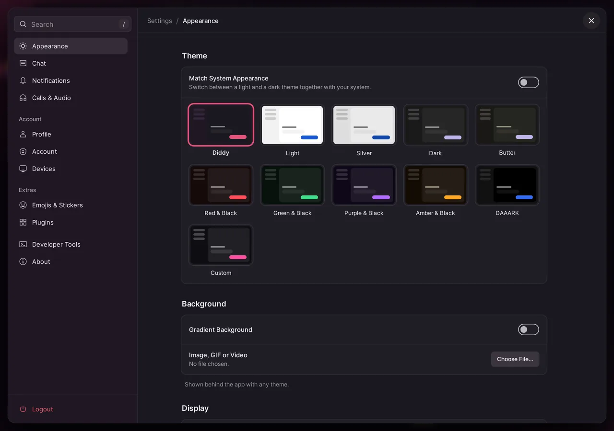

Diddy is a free, open-source Matrix client for macOS, Linux and iPhone. Reliable voice rooms, screen sharing with sound, ten themes and rich profiles, on any homeserver.
Free · AGPL-3.0 · No account with us, no tracking.Other platforms
macOS (Apple Silicon)
Linux x86_64
iPhone & iPad (beta)beta

Standup · 4 in voice
LIVEMia's screen, with sound
Open source, AGPL-3.0
End-to-end encrypted rooms
Any Matrix homeserver
No telemetry
No forced updates
Features
Everything a group chat needs, nothing it doesn't.
Diddy builds on Cinny and adds what everyday chat with friends and teams was missing: calls that connect, streams that stay sharp and an interface you can make your own.
Voice calls that connect
Join a voice room with one click. Every person and every stream gets its own tile; click one to bring it to the front.
Works on macOS, where Cinny's web client hangs on join, and on Linux, also in encrypted rooms.
Music stays loud: with voice processing off, macOS no longer ducks your other apps.
Noise suppression (RNNoise) and per-person volume up to 200 %.
Screen sharing with sound
Streams stay sharp even when Diddy is in the background. Share system audio on macOS 14.2+ and Linux and toggle it from the call bar, before or during the stream.
Several streams at once, zoom and full screen.
Watch together in a room.
Profiles with personality
Name colours, banners, badges, profile effects and frames. Everyone on Diddy sees them on profile cards, in the member list and in chat.
Ten themes
From Light and Silver to Daaark, Butter and the plum-and-pink Diddy theme. Or simply follow the system. See them all.
Status that means something
Online, Idle, Do Not Disturb and Invisible. Do Not Disturb silences sounds, notifications and the call ring, and syncs across your devices.
Voice messages
Record and play with a scrubbable waveform. Element and other clients show them as proper voice messages.
Plugins, soundboard and sounds
A sandboxed plugin system with a built-in gallery, a soundboard with MyInstants import, and every app sound can be switched off or replaced with your own file.
To-doNotesTimerCalendarClockWeatherCurrencyDice+ your own
Bot cards
Bots can send structured cards: now playing with a live progress bar, queues, help pages and buttons. Other clients still see plain text.
Midnight DriveNeon Coast · 1:24 / 3:17
When a homeserver goes down
Retry, or open another server in its own window with a separate login and data store. Your account and keys stay untouched.
matrix.example.orgunreachable
chat.example.netconnected
A calm interface
Notifications slide in at the top while Diddy is in front, incoming calls arrive as a banner, room updates fold into one line and settings are searchable down to every switch.
Showcase
Make it yours.
Ten built-in themes, light to very dark. Pick one to preview the real app.
Theme: Diddy

Design your profile card. Banner, badges, effects, frames and name style, with a live preview.

Settings by topic. Appearance, Chat, Notifications, Calls & Audio, and a search that finds every switch.
All screenshots come from the real app and show fictional example data.
Platforms
Honest about what works where.
macOS is the daily driver. Linux and the native iOS app are catching up fast; anything not yet tested in daily use is marked as such.
Feature support per platform
Feature
macOS
Linux
iPhone / iPad
Chat, rooms, encryption
Works
WorksElectron
Betanative app
Voice calls
Works
Worksalso encrypted
Beta
Screen sharing
Works
BetaWayland portal / X11 picker
Betafull screen on iOS 27+
…with system sound
WorksmacOS 14.2+
Betaother apps’ sound
Betaapp sound
Connection profiles
WorksmacOS 14+
Beta
Betamultiple accounts
Voice messages
Works
Beta
Betano Ogg/Opus playback
Call tiles, soundboard
Works
Works
Beta
Bot cards, profiles, themes, plugins
Works
Works
Beta
Works and is testedBuilt, not yet tested in daily useNot supported yet
Download
Get Diddy v1.7.1.
Free downloads from GitHub Releases, built automatically from the source. Check them against SHA256SUMS if you like.
Open the DMG and drag Diddy to Applications.
Run this once in Terminal. Diddy is not notarized by Apple yet, so macOS would block it otherwise.
xattr -cr /Applications/Diddy.app
Start Diddy and allow the microphone. For stream sound, also allow Screen & System Audio Recording.
Diddy for Mac
Apple Silicon (M1 or newer). Some features need macOS 14 or 14.2.
The AppImage needs FUSE 2 (libfuse2 / libfuse2t64). On Ubuntu 24.04+ AppArmor can block Chromium's sandbox inside an AppImage, so use the .deb there: it ships an AppArmor profile.
Diddy for Linux
x86_64, built on Electron. System sound for streams needs PipeWire (pipewire-pulse) or PulseAudio.
No. Diddy is free and open source under the AGPL-3.0, like Cinny, which it is built on.
Do I need a new account?
No. Diddy speaks plain Matrix. Sign in with any existing Matrix account, for example on matrix.org or your own homeserver. Diddy itself runs no server and has no accounts.
What data does Diddy collect?
None for us. Diddy has no telemetry or analytics and there is no Diddy server. The app talks to the homeserver you choose, and at startup it asks GitHub whether a new release exists (you can turn this off under Settings → About). Optional call alerts on iOS use ntfy only if you turn them on.
A local log file helps with bug reports. It stays on your device and contains technical events, never message text.
Why do I have to run a Terminal command on the Mac?
Diddy is not notarized by Apple yet. xattr -cr removes the quarantine flag so macOS lets the app start.
Does Diddy update itself?
Only when you say so. At startup Diddy asks whether you want to update, skip that version or wait. On macOS it can then download and install the new version for you; on Linux it opens the release page. Nothing changes without your click.
Can I chat with people on Element or other apps?
Yes. It is all Matrix. Profiles, badges and bot cards are extras that only Diddy users see; everyone else gets normal messages.
Windows?
There is no official Windows build at the moment. macOS, Linux and iOS are the supported platforms.